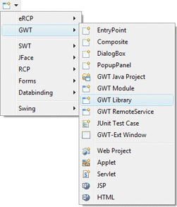

|
The GWT Library wizard creates a common shareable widget library. The wizard can be
selected from the drop down wizard menu or from the
Eclipse New wizard.
Start the GWT Java Project wizard and create an empty project without an entry point. Enter your module name and package name. For example, "MyLibrary" and "com.company.code.mylibrary".
From that point you can start using the GWT Designer editor as you would normally do. |
|
|